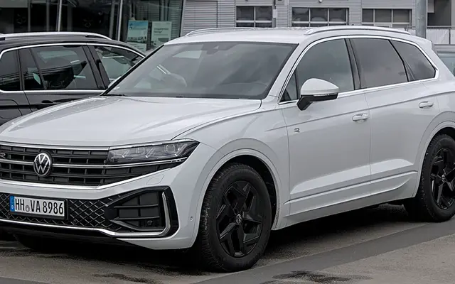

Par Motor › Precios por modelo › Volkswagen Touareg
Precio de segunda mano · noviembre de 2026¿Cuánto vale un Volkswagen Touareg de segunda mano?

Precio justo estimado de un Volkswagen Touareg usado en España, año por año, con los kilómetros normales para su edad y en buen estado: de 8.400 € a 82.300 €. Para tasar el tuyo con sus kilómetros reales y su estado, usa el tasador gratis.
Precios del Volkswagen Touareg por año
Touareg I (2002–2010)
Precio de nuevo: 2.5 TDI 174 CV, 47.000 € · 3.2 V6 220 CV, 48.000 € · 3.0 TDI 240 CV, 55.000 €
| Año | Km normales | 2.5 TDI 174 CV · Diésel | 3.2 V6 220 CV · Gasolina | 3.0 TDI 240 CV · Diésel |
|---|---|---|---|---|
| 2010 | 100.000 km | 15.100 € | 15.900 € | 17.700 € |
| 2009 | 100.000 km | 14.000 € | 14.800 € | 16.400 € |
| 2008 | 100.000 km | 13.000 € | 13.700 € | 15.300 € |
| 2007 | 100.000 km | 12.100 € | 12.800 € | 14.200 € |
| 2006 | 100.000 km | 11.300 € | 11.800 € | 13.200 € |
| 2005 | 100.000 km | 10.500 € | 11.000 € | 12.200 € |
| 2004 | 100.000 km | 9.700 € | 10.200 € | 11.400 € |
| 2003 | 100.000 km | 9.000 € | 9.500 € | 10.600 € |
| 2002 | 100.000 km | 8.400 € | 8.800 € | 9.800 € |
Touareg II (2010–2018)
Precio de nuevo: 3.0 TDI 262 CV, 60.000 € · 3.6 V6 FSI 280 CV, 62.000 € · Hybrid 380 CV, 82.000 €
| Año | Km normales | 3.0 TDI 262 CV · Diésel | 3.6 V6 FSI 280 CV · Gasolina | Hybrid 380 CV · Híbrido |
|---|---|---|---|---|
| 2018 | 100.000 km | 32.800 € | 30.900 € | 42.800 € |
| 2017 | 100.000 km | 32.100 € | 30.000 € | 41.700 € |
| 2016 | 100.000 km | 30.000 € | 29.100 € | 40.400 € |
| 2015 | 100.000 km | 27.900 € | 28.200 € | 39.200 € |
| 2014 | 100.000 km | 25.900 € | 27.300 € | 37.900 € |
| 2013 | 100.000 km | 24.100 € | 25.600 € | 35.600 € |
| 2012 | 100.000 km | 22.400 € | 23.800 € | 33.100 € |
| 2011 | 100.000 km | 20.800 € | 22.100 € | 30.700 € |
| 2010 | 100.000 km | 19.300 € | 20.600 € | 28.500 € |
Touareg III (2018–hoy)
Precio de nuevo: 3.0 TDI 231 CV, 70.000 € · 3.0 TSI 340 CV, 80.000 € · eHybrid (enchufable) 381 CV, 85.000 €
| Año | Km normales | 3.0 TDI 231 CV · Diésel | 3.0 TSI 340 CV · Gasolina | eHybrid (enchufable) 381 CV · Híbrido enchufable |
|---|---|---|---|---|
| 2026 | 10.000 km | 69.200 € | 82.300 € | 78.700 € |
| 2025 | 30.000 km | 58.700 € | 69.900 € | 66.800 € |
| 2024 | 50.000 km | 54.600 € | 64.900 € | 62.100 € |
| 2023 | 70.000 km | 50.700 € | 60.300 € | 57.600 € |
| 2022 | 90.000 km | 43.300 € | 56.000 € | 53.500 € |
| 2021 | 100.000 km | 39.800 € | 49.900 € | 47.700 € |
| 2020 | 100.000 km | 39.400 € | 43.500 € | 41.600 € |
| 2019 | 100.000 km | 38.900 € | 40.800 € | 39.100 € |
| 2018 | 100.000 km | 38.200 € | 39.800 € | 38.100 € |
Kilómetros normales: 15.000 al año en gasolina, híbridos y eléctricos, y 20.000 en diésel, con un máximo de 100.000 km (por encima no tasamos: el precio depende demasiado del historial de cada coche). Cifras redondeadas a 100 €.
Preguntas frecuentes
¿Cuánto vale un Volkswagen Touareg de segunda mano?
Según el año, la versión y los kilómetros, un Volkswagen Touareg usado vale hoy de 8.400 € a 82.300 € en España. El más barato de nuestra tabla es un 2.5 TDI de 2002 (8.400 €) y el más caro un 3.0 TSI de 2026 (82.300 €). Son precios justos estimados entre particulares y profesionales, con los kilómetros normales para su edad y en buen estado.
¿Cuánto valor pierde un Volkswagen Touareg al año?
Con unos años encima, un Volkswagen Touareg pierde alrededor de un 10 % de su valor cada año (calculado sobre el 3.0 TDI de la generación Touareg III). Los primeros años la caída es mayor y a partir de los 70.000 km se acelera.
¿Qué motorizaciones tiene el Volkswagen Touareg?
En nuestra base de datos hay versiones diésel, gasolina, híbrido y híbrido enchufable, en 3 generaciónes: Touareg I, Touareg II y Touareg III.
¿Cómo sé si me piden demasiado por un Volkswagen Touareg?
Abre el tasador de Par Motor, elige el Volkswagen Touareg, el año y los kilómetros reales, y escribe lo que te piden. Te diremos si está por debajo del precio justo (chollo) o por encima (caro). Es gratis y no pide registro ni matrícula.
Otros Volkswagen
- Amarok
- Beetle
- Caddy
- CC y Arteon
- Eos
- Golf
- Golf Plus y Sportsvan
- ID. Buzz
- ID.3
- ID.4
- ID.5
- ID.7
- Jetta
- Multivan y California
- Passat
- Polo
- Scirocco
- Sharan
- T-Cross
- T-Roc
- Taigo
- Tiguan
- Touran
- up!
Compara su coste real
El precio de compra es solo una parte. Mira cuánto te costaría al mes con combustible, seguro, neumáticos, mantenimiento y lo que pierde de valor.
Abrir el comparador →